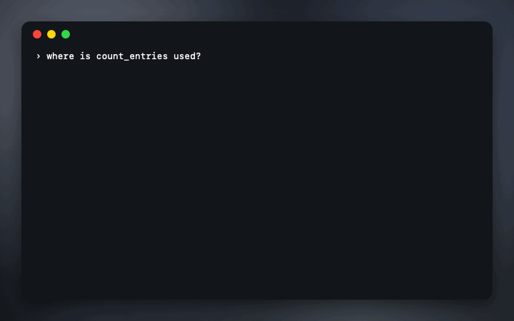

symbolhop
Go-to-definition and find-references for coding agents. Codex, Claude Code and Gemini CLI ask your language servers instead of grepping, and get exact answers in one short line each.

free · open source · mcp server and cli · read-only · no dependencies
Five questions, answered exactly
- lsp_references: every use of a symbol, without comments, strings or look-alikes.
- lsp_definition: where it's defined.
- lsp_hover: its type, signature and documentation.
- lsp_diagnostics: errors and warnings in a file right after an edit.
- lsp_symbols: a file's outline.
Set up in one line
- Codex
~/.codex/config.toml:[mcp_servers.symbolhop]withcommand = "npx",args = ["-y", "github:stanczykwyatt/symbolhop#v0.1.0", "serve"] - Claude Code:
claude mcp add symbolhop -- npx -y github:stanczykwyatt/symbolhop#v0.1.0 serve - Gemini CLI and Cursor: the same command under
mcpServers.
Questions
Why not let the agent grep?
Grep returns comments, strings, log messages and similarly named symbols along with the real uses. In a measured example, it returned 77 lines for a function's uses, 67 of them not uses; lsp_references returned the 10 real ones.
Is it safe to give an agent?
It only asks read-only questions, only about files inside the project, never writes anything, has no network access and no dependencies. SECURITY.md has the details.
Which languages?
Any with a language server on your PATH that it knows: C, C++ and Objective-C with clangd, TypeScript and JavaScript, Python, Go, Rust, Swift, Java, Ruby, Lua and Zig.
Does Codex have this built in?
Not yet; openai/codex#8745 asks for it. symbolhop works with Codex today through MCP.